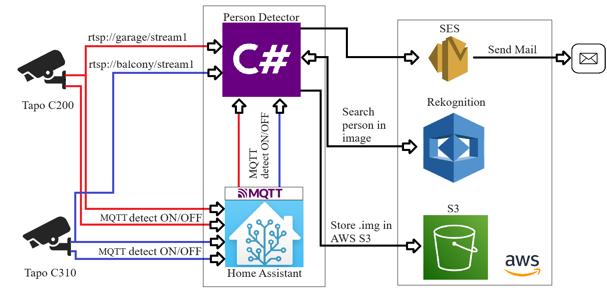

PersonDetector .NET 6.0 · C#
Automatická detekcia osôb z IP kamier pomocou AWS AI služieb a integrácie s Home Assistant cez MQTT.
1 Identita projektu
| Atribút | Hodnota |
|---|---|
| Názov | PersonDetector |
| Typ | Konzolová aplikácia (Exe) |
| Framework | .NET 6.0 |
| Jazyk | C# s ImplicitUsings a Nullable |
| Paradigma | Asynchrónna, multi-threadová, event-driven |
2 Účel systému
Systém je automatizované riešenie pre sledovanie IP kamier. Sleduje viacero RTSP video streamov a po prijatí signálu o pohybe z Home Assistant (cez MQTT) začne zachytávať snímky, analyzuje ich pomocou AWS Rekognition AI a ak detekuje osobu, upozorní používateľa.
3 Architektúra

Aplikácia integruje:
- Tapo IP kamery (C200, C310) poskytujúce RTSP video streamy
- Home Assistant ako spúšťač detekcie pohybu cez MQTT
- AWS Rekognition na AI detekciu osôb
- AWS S3 na ukladanie detekovaných snímkov
- AWS SES na emailové notifikácie
4 Popis tried
4.1 Program.cs — Vstupný bod
Životný cyklus aplikácie:
- Vytvorí
Logger - Vytvorí
Detectora zavoláSettings()(asynchrónna inicializácia) - Čaká na stlačenie klávesu (
Console.ReadKey) - Zaloguje ukončenie a zavolá
detector.Stop()
4.2 Settings.cs — Konfiguračný model
POCO objekt deserializovaný zo súboru settings.json:
| Property | Typ | Popis |
|---|---|---|
mqttServer | string | IP adresa MQTT brokera |
mqttPort | int | Port MQTT brokera (štandardne: 1883) |
mqttCredentialsName | string | Používateľské meno pre MQTT |
mqttCredentialsPassword | string | Heslo pre MQTT |
bufferLimit | int | Max. počet snímkov uložených pri jednej detekcii pohybu |
S3Bucket | string | Názov AWS S3 bucketu |
streams | Dictionary<string,string> | Mapa: MQTT topic → RTSP URL |

4.3 Frame.cs — Dátový model snímku
string date // timestamp + názov kamery: "kamera_yyyy-MM-dd_HH:mm:ss" Mat frame // OpenCV Mat objekt (nekomprimované obrazové dáta v pamäti)
4.4 Logger.cs — Logovací systém
- Dvojitý výstup: farebná konzola + súbor
log.txt - Thread-safe cez
lock(_lock) - Automaticky vytvorí
log.txtak neexistuje - Formát záznamu:
yyyy:MM:dd HH:mm:ss [názov_komponentu] správa
| Farba | Význam |
|---|---|
| 🟢 Zelená | Úspech (pripojenie, detekcia) |
| 🔴 Červená | Chyba, zastavenie |
| 🔵 Modrá | Info (nový capture objekt) |
| ⚪ Sivá | Štandardná správa |

4.5 Detector.cs — Hlavný orchestrátor
Konštruktor
- Načíta
settings.json(cesta sa vypočíta 3 úrovne hore odbin/Debug/net6.0/) - Deserializuje JSON do
SettingspomocouSystem.Text.Json - Vytvorí MQTT klienta cez
MqttFactory
Settings() — Asynchrónna inicializácia
- Validuje MQTT konfiguráciu
- Registruje event handlery (
Connected,Disconnected,MessageReceived) - Pripojí sa k MQTT brokeru
- Subscribeuje sa na topic pre každý nakonfigurovaný stream (QoS 0)
- Vytvorí a spustí všetky inštancie
StreamCapture
MQTT Message Handler
Keď príde udalosť pohybu z Home Assistant:

payload == "on" → readingStart() na príslušnom streame payload != "on" → readingStop() na príslušnom streame
4.6 StreamCapture.cs — Jadro systému
Najkomplexnejšia trieda. Spravuje celý životný cyklus jednej kamery.
Stavové premenné
| Premenná | Typ | Ochrana | Popis |
|---|---|---|---|
running | bool | — | Riadi hlavný loop oboch vlákien |
reading | bool | _readingLock | Či sa majú ukladať snímky |
buffer | List<List<Frame>> | _lock | Zdieľaný buffer medzi vláknami |
tasks | List<Task> | — | 2 vlákna: FrameCatch + ProcessBufferItem |
Vlákno 1: FrameCatch()
Nepretržite číta snímky z RTSP streamu. Pri výpadku streamu sa VideoCapture zahodí a vytvorí znovu —
automatický reconnect kamery.


Vlákno 2: ProcessBufferItem()
1. Vezmi prvý item z bufferu (thread-safe) 2. Skontroluj snímky na indexe 1, 2, 3 a prostredný snímok 3. Pre každý: ConvertMatToByteArray → DetectPersonInImage (AWS Rekognition) 4. Nájdi snímok s najvyššou confidence 5. Ak bola detekovaná osoba (confidence ≥ 75 %): - StoreToS3Bucket() - SendEmailWithAttachment() 6. Dispose všetkých snímkov 7. Sleep(100ms) — uvoľnenie CPU
DetectPersonInImage() — AWS Rekognition
Vstup: byte[] (JPEG snímok) Výstup: float (confidence 0–100, alebo 0 ak osoba nenájdená) Parametre požiadavky: MaxLabels: 10 MinConfidence: 75 % Logika: Prechádza všetky detekované labely Hľadá label "person" s confidence >= 75 Vracia najvyššie confidence (ak viacero detekcií)
StoreToS3Bucket() — AWS S3
Formát kľúča objektu: {názov_kamery}/{timestamp}_{confidence}_{index}
Príklad: balcony_cameraMotion/2024-06-13_10:41:32_95,40874_1


SendEmailWithAttachment() — AWS SES
Obsah emailu: Predmet = názov kamery · Telo = názov kamery + S3 kľúč + timestamp · Príloha = JPEG snímok


5 Celkový tok dát
6 Závislosti (NuGet balíčky)
| Balíček | Verzia | Účel |
|---|---|---|
AWSSDK.Rekognition | 3.7.302.25 | AI detekcia objektov a osôb |
AWSSDK.S3 | 3.7.308.7 | Cloudové úložisko snímkov |
AWSSDK.SimpleEmail | 3.7.300.100 | Emailové notifikácie |
Emgu.CV | 4.9.0.5494 | OpenCV wrapper — čítanie videa |
Emgu.CV.runtime.windows | 4.9.0.5494 | Natívne binárky OpenCV pre Windows |
MimeKit | 4.6.0 | Zostavenie MIME emailu s prílohou |
MQTTnet | 4.3.6.1152 | MQTT klient pre integráciu s Home Assistant |
OpenCvSharp4 | 4.9.0.20240103 | Alternatívny OpenCV wrapper (nevyužitý) |
OpenCvSharp4.runtime.win | 4.9.0.20240103 | Natívne binárky pre OpenCvSharp |
7 Inštalácia
- Naklonuj repozitár
- Skopíruj
settings.template.jsondosettings.json - Vyplň hodnoty (MQTT broker, AWS S3 bucket, RTSP stream URL adresy)
- Nakonfiguruj AWS credentials cez
~/.aws/credentialsalebo environment variables - Skompiluj a spusti:
dotnet build dotnet run
settings.json je uvedený v .gitignore — nikdy ho necommituj s reálnymi prihlasovacími údajmi. Ako vzor použi settings.template.json.
8 Známe problémy a návrhy na zlepšenie
🔴 Kritické
| # | Problém | Miesto | Popis |
|---|---|---|---|
| 1 | async void | StreamCapture.cs:172 |
ProcessBufferItem() je async void — výnimky sa potichu prehltia |
| 2 | ForEach + async | Detector.cs:148 |
Stop() používa async lambdu vo ForEach — nie je správne awaited |
| 3 | Chýba reconnect | Detector.cs:197 |
Po výpadku MQTT brokera sa aplikácia nikdy nepripojí späť — logika je zakomentovaná |
🟡 Stredné
| # | Problém | Miesto | Popis |
|---|---|---|---|
| 4 | Nový klient pri každom volaní | StreamCapture.cs:335 | AmazonRekognitionClient a AmazonS3Client sa vytvárajú pri každom snímku |
| 5 | Chyba vo validácii | Detector.cs:65 | Používa && namiesto || — validácia zlyhá len ak sú VŠETKY MQTT parametre prázdne naraz |
| 6 | Index 0 sa preskočí | StreamCapture.cs:202 | Prvý snímok bufferu sa nikdy neposiela na analýzu |
| 7 | Potenciálny index mimo rozsahu | StreamCapture.cs:202 | Buffer s menej ako 4 snímkami môže hodiť ArgumentOutOfRangeException |
| 8 | Chýba IDisposable | Frame.cs | Mat je unmanaged resource — trieda by mala implementovať IDisposable |
| 9 | Hardcoded región | StreamCapture.cs:251 | EUCentral1 je napevno v kóde, mal by byť v konfigurácii |
🟢 Menšie / Návrhy
| # | Návrh | Popis |
|---|---|---|
| 10 | Windows Service | Aplikácia beží kým niekto nestlačí klávesu — pre produkciu vhodnejší BackgroundService |
| 11 | Cesta k settings | ../../../settings.json funguje len pri Debug buildu |
| 12 | Hardcoded emailové adresy | From/To adresy sú natvrdo v StreamCapture.cs — mali by byť v settings.json |